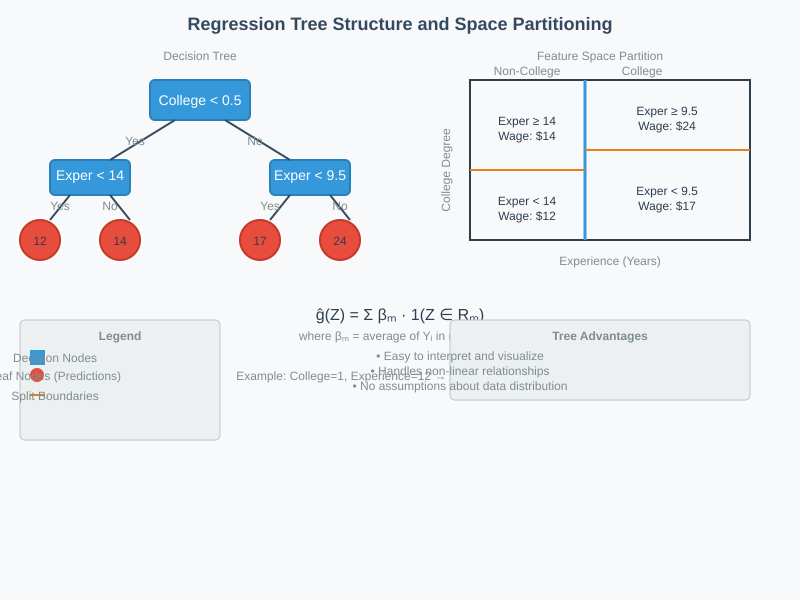
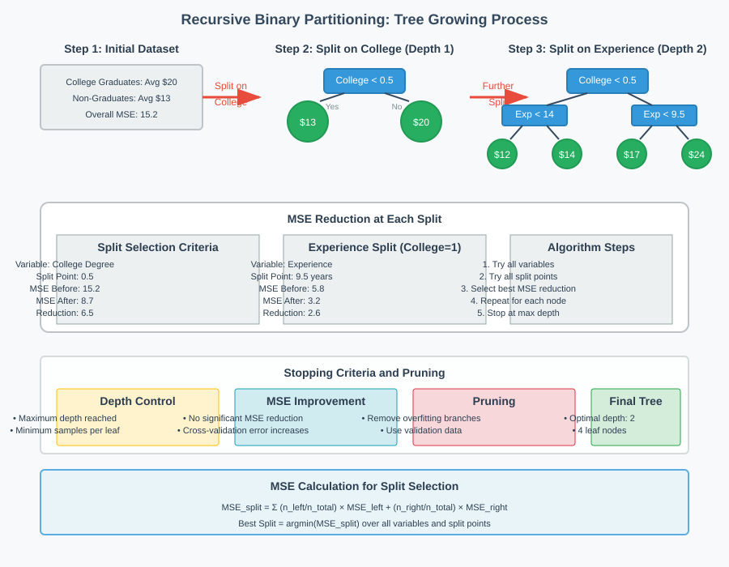
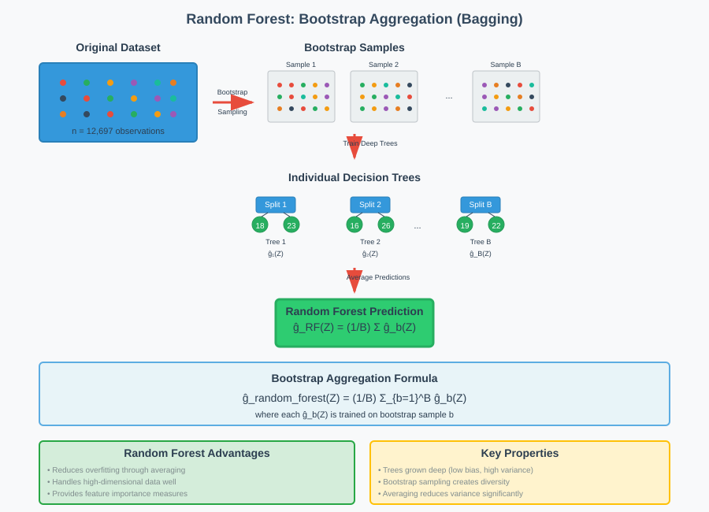
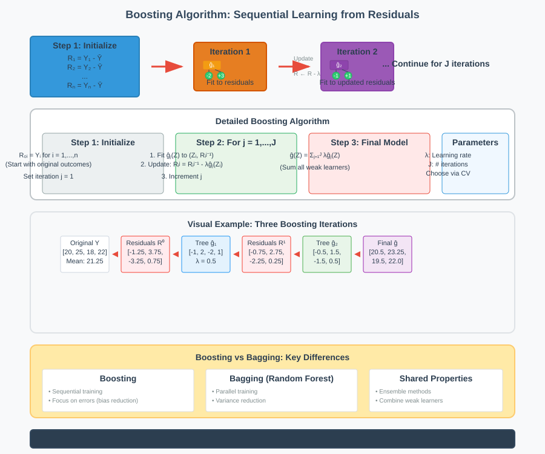

Wage Prediction and Non-Linear Regression Models

🔍 Quick Navigation
- Introduction
- Dataset Overview
- Regression Trees
- Random Forest
- Boosting Algorithms
- Model Comparison Results
- Ensemble Methods
- Key Findings
- References & Further Reading
📊 Introduction
This documentation explores the application of modern regression methods for wage prediction, comparing linear and non-linear approaches on real-world data. We examine how advanced algorithms like Random Forest, Boosted Trees, and Neural Networks perform against classical methods when predicting log wages using worker characteristics.
The best prediction rule for outcome Y using features Z is the conditional expectation:
g(Z) = E(Y | Z)
Modern regression methods provide estimated prediction rules ĝ(Z) that approximate the true function g(Z) under appropriate regularity conditions. Theoretical work demonstrates that with sufficient sample size n, the mean squared approximation error converges to zero:
E_Z(ĝ(Z) - g(Z))² → 0, as n → ∞
where E_Z denotes the expectation taken over Z, holding everything else fixed.
📈 Dataset Overview
Our analysis uses data from the March Current Population Survey Supplement 2015 containing:
- Sample Size: 12,697 observations
- Target Variable: Log wages (natural logarithms of actual wages) of never-married workers in the United States
- Features: Worker characteristics including:
- Experience levels
- Race indicators
- Education levels
- 23 industry indicators
- 22 occupation indicators
- Other demographic characteristics
Model Configurations
Linear Models: Prediction rule of the form ĝ(Z) = β̂'X
- Basic Model: 72 raw regressors (Z) plus constant
- Flexible Model: 2,336 constructed regressors including:
- Raw regressors Z
- Four polynomials in experience
- All two-way interactions
Non-Linear Models: Direct estimation of ĝ(Z) through: - Regression Trees - Random Forests - Boosted Trees - Neural Networks
🌳 Regression Trees
Regression trees partition the regressor space into rectangles, assigning predicted values to each region. This creates an intuitive, interpretable model structure.

Mathematical Formulation
Given n observations (Z_i, Y_i), a partition into M rectangles R_1 through R_M yields:
ĝ(Z) = Σ(m=1 to M) β_m · 1(Z ∈ R_m)
where:
- 1(Z ∈ R_m) returns 1 if Z falls in rectangle R_m, 0 otherwise
- β_m is the predicted value for region m
The predicted values are obtained by minimizing sample MSE:
β̂ = argmin Σ(i=1 to n) (Y_i - Σ(m=1 to M) β_m · 1(Z_i ∈ R_m))²
This results in β_m equaling the average of Y_i values falling in rectangle R_m.
Tree Growing Process
Recursive Binary Partitioning:
- Initial Split: Choose regressor and split point minimizing sample MSE
- Recursive Splitting: Repeat for each resulting region
- Stopping Criteria: Reach desired depth or minimum node size

Example: Wage Prediction Tree
For college graduates with >9.5 years experience: \(24/hour** For college graduates with ≤9.5 years experience: **\)17/hour For non-graduates with >14 years experience: \(14/hour** For non-graduates with ≤14 years experience: **\)12/hour
Tree Pruning
Pruning prevents overfitting by removing redundant subtrees. Deeper trees provide better approximation but become noisier due to fewer observations per terminal node. Cross-validation helps determine optimal tree depth.
🌲 Random Forest
Random Forest improves upon single trees through Bootstrap Aggregation (Bagging). It constructs multiple decision trees and averages their predictions.

Algorithm
- Bootstrap Sampling: Create B bootstrap samples from original data
- Tree Construction: Build deep trees on each sample
- Averaging: Combine predictions
ĝ_random_forest(Z) = (1/B) Σ(b=1 to B) ĝ_b(Z)
Key Principles
- Deep Trees: Minimize approximation error
- Averaging: Reduce variance from individual noisy trees
- Bootstrap: Simulate multiple independent datasets
- No Pruning: Trees grown to full depth
Advantages
- Reduces overfitting compared to single trees
- Handles high-dimensional data well
- Provides feature importance measures
- Robust to outliers and missing values
🚀 Boosting Algorithms
Boosting trains weak learners sequentially, with each focusing on observations poorly predicted by previous models.

Boosting Algorithm
Step 1: Initialize residuals R_i = Y_i for i = 1,...,n
Step 2: For j = 1,...,J:
- Fit tree-based prediction rule ĝ_j(Z) to data (Z_i, R_i)
- Update residuals: R_i ← R_i - λĝ_j(Z_i)
Step 3: Construct boosted prediction rule:
ĝ(Z) = Σ(j=1 to J) λĝ_j(Z)
Key Differences from Bagging
| Aspect | Bagging (Random Forest) | Boosting |
|---|---|---|
| Training | Parallel | Sequential |
| Tree Depth | Deep trees | Shallow trees |
| Focus | Variance reduction | Bias reduction |
| Data Weighting | Random sampling | Error-focused weighting |
Tuning Parameters
- J: Number of boosting steps
- λ: Learning rate (degree of residual updating)
- Selected via cross-validation to prevent overfitting
📋 Model Comparison Results
The empirical comparison uses a single train-test split on the wage dataset:

Performance Table
| Method | Test MSE | Std Error | R-squared |
|---|---|---|---|
| Random Forest | 0.249 | 0.015 | 0.350 |
| Least Squares | 0.253 | 0.017 | 0.340 |
| Lasso | 0.260 | 0.016 | 0.322 |
| Boosted Trees | 0.259 | 0.016 | 0.324 |
| Post-Lasso | 0.260 | 0.017 | 0.321 |
| Cross-Validated Elastic Net | 0.271 | 0.017 | 0.292 |
| Neural Network | 0.488 | 0.045 | 0.000 |
| Least Squares (Flexible) | 11.262 | 2.915 | 0.000 |
Key Observations
-
Random Forest achieves the best performance with lowest Test MSE (0.249) and highest R² (0.350)
-
Simple OLS performs remarkably well, nearly matching Random Forest performance (MSE: 0.253 vs 0.249)
-
Flexible OLS performs poorly due to overfitting with 2,336 regressors
-
Penalized methods (Lasso, Elastic Net) significantly improve upon flexible OLS by reducing variance
-
Neural Networks with few neurons perform poorly due to crude approximation
-
Most methods perform within one standard error of each other, suggesting statistical equivalence
🎯 Ensemble Methods
Aggregated Prediction Rules
We can combine multiple prediction rules using weighted averages:
ĝ(Z) = Σ(k=1 to K) α̃_k ĝ_k(Z)
where α̃_k represents coefficients assigned to different prediction rules.
Aggregation Methods
Small K: Use least squares on test data
min Σ(i∈V) (Y_i - Σ(k=1 to K) α_k ĝ_k(Z_i))²
Large K: Use Lasso aggregation with penalty term
min Σ(i∈V) (Y_i - Σ(k=1 to K) α_k ĝ_k(Z_i))² + λ Σ(k=1 to K) |α_k|
Aggregation Results
| Method | Weight (OLS) | Weight (Lasso) |
|---|---|---|
| OLS-Simple | 0.41 | 0.42 |
| Random Forest | 0.65 | 0.59 |
| Lasso | 0.22 | 0.04 |
| Cross-Validated Elastic Net | -0.24 | 0.00 |
| Boosted Trees | 0.08 | 0.00 |
Performance Improvement: Aggregated methods achieve 36.5% R² compared to 35% R² from Random Forest alone.
🔑 Key Findings
Model Selection Insights
-
Simplicity vs Complexity: Simple OLS with basic features nearly matches sophisticated non-linear methods
-
Feature Engineering Matters: Flexible models with many features require regularization to avoid overfitting
-
Ensemble Benefits: Aggregating multiple models provides modest but consistent improvements
-
Context Dependency: The relative advantage of complex methods depends on the underlying data structure
Practical Recommendations
- Start Simple: Begin with OLS on carefully selected features
- Cross-Validate: Use proper validation for model selection and hyperparameter tuning
- Consider Ensembles: Aggregate multiple approaches for robust predictions
- Regularize High-Dimensional Models: Apply penalization when feature count is large
Statistical Significance
The performance differences between top methods (Random Forest, OLS, Lasso) are within one standard error, suggesting they are statistically indistinguishable for this particular dataset and prediction task.
📚 References & Further Reading
- Breiman, L. (2001). "Random Forests." Machine Learning, 45(1), 5-32.
-
Seminal paper introducing Random Forest methodology
-
Hastie, T., Tibshirani, R., & Friedman, J. (2009). "The Elements of Statistical Learning: Data Mining, Inference, and Prediction" (2nd ed.). Springer.
-
Comprehensive reference for statistical learning methods
-
James, G., Witten, D., Hastie, T., & Tibshirani, R. (2021). "An Introduction to Statistical Learning: with Applications in R" (2nd ed.). Springer.
-
Accessible introduction to machine learning concepts
-
Chen, T., & Guestrin, C. (2016). "XGBoost: A Scalable Tree Boosting System." Proceedings of the 22nd ACM SIGKDD International Conference on Knowledge Discovery and Data Mining.
-
Modern boosting implementation and theory
-
Mullainathan, S., & Spiess, J. (2017). "Machine Learning: An Applied Econometric Approach." Journal of Economic Perspectives, 31(2), 87-106.
-
Economic perspective on machine learning applications
-
Athey, S., & Imbens, G.W. (2019). "Machine Learning Methods That Economists Should Know About." Annual Review of Economics, 11, 685-725.
-
Survey of ML methods relevant to economic analysis
-
Breiman, L. (1996). "Bagging Predictors." Machine Learning, 24(2), 123-140.
-
Foundation of bootstrap aggregation methods
-
Freund, Y., & Schapire, R.E. (1997). "A Decision-Theoretic Generalization of On-Line Learning and an Application to Boosting." Journal of Computer and System Sciences, 55(1), 119-139.
- Theoretical foundations of boosting algorithms
This documentation provides a comprehensive guide to wage prediction using modern regression methods, combining theoretical foundations with practical empirical results from real-world data analysis.